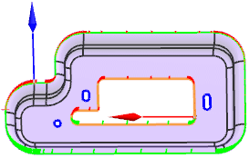

修边角度检查
预计完成这堂课需要：5–7 分钟
使用修边角度检查命令来分析从部件表面修剪掉废料处的角度。
该命令的输出为：
-
将列出修边直线中检查点处的修边角度值，它将显示在修边角度检查对话框中
-
将在图形窗口中显示一组线段，线段的长度表示检查点处的修边角度，颜色表示修边角度是否满足制造规则：
-
绿色 = 满足
-
红色 = 不满足
-
黄色 = 在某些范围内变为不满足
-
您可以通过使用危险区范围用户默认设置来指定范围。
|
提示 |
要查找用户默认设置，选择文件→实用工具→用户默认设置，然后点击查找默认设置 |

位于何处？
|
应用模块 |
开始→所有应用模块→车辆制造自动化→冲模工程 |
|
先决条件 |
您必须处于建模应用模块中。 |
|
工具条 |
冲模工程工具条→检查工具 →冲模工程检查工具工具条→修边角度检查 |
|
菜单 |
工具→车辆制造自动化→冲模工程→设计检查工具→修边角度检查 |